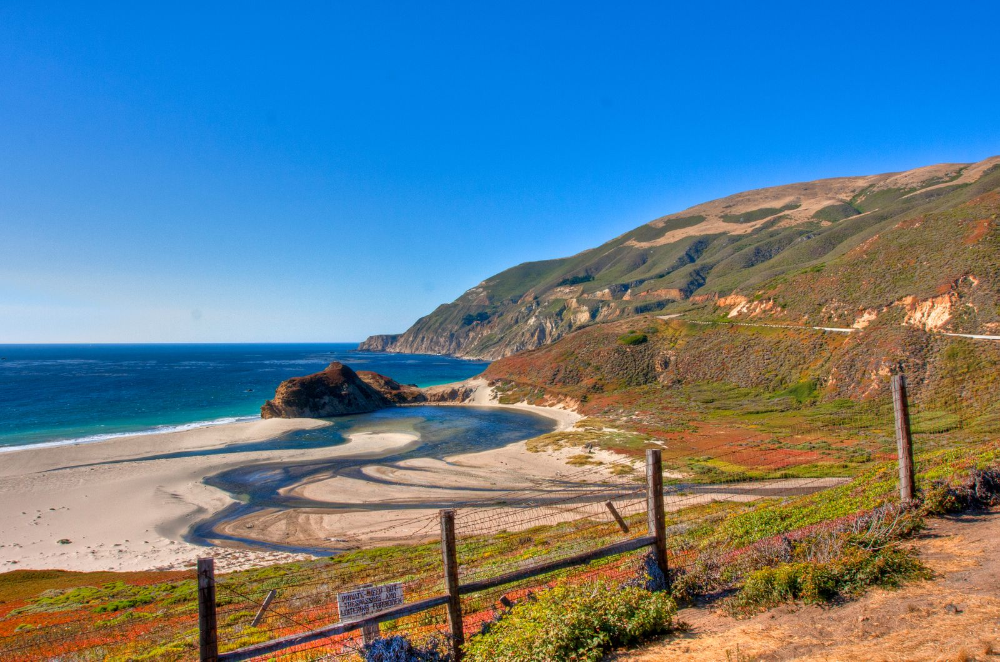
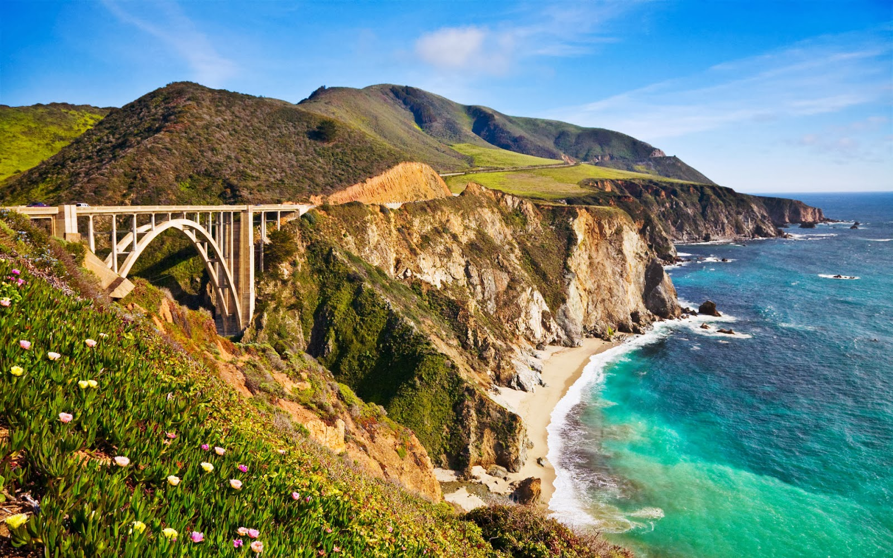

My Journey Along California Highway 1
A drive on the California Highway 1 was on our bucket list for a while. Finally we decided to go for it and booked our flight from St.Louis to San Franciso. Once we landed, we took a rental, went to walmart to purchase the items needed for the trip. For the night, we stayed at a hotel in San Francisco and we started early on the next morning.

Our trip from San Francisco to Los Angeles along Highway 1 was like a big adventure. We drove on a road that followed the coastline of California. It was exciting because we knew we would see lots of cool things along the way. We left San Francisco and said goodbye to the big red Golden Gate Bridge. The road took us along the edge of the ocean. We could smell the salty sea air and feel the wind in our hair.

Our first stop was a town called Monterey. It was cute and had old buildings and a busy waterfront. We ate delicious clam chowder in bread bowls by the water. It was yummy! Then, we went to Carmel-by-the-Sea. It was like a storybook town with pretty houses and gardens. We walked around and found interesting shops. The beaches there were beautiful.
The best part of our trip was when we got to Big Sur. The road went up and down along big cliffs. We stopped a lot to take pictures of the amazing views. We even saw a big bridge called Bixby Creek Bridge. It was really tall!
When we finally reached Los Angeles, the scenery changed. There were big beaches and lots of people. Our trip was over, but we had lots of memories of the things we saw and did along the way. Our trip on Highway 1 was like a big adventure. We saw so many beautiful things and had a lot of fun together.
The total expense for this was around $3500, but it was definitely worth it.